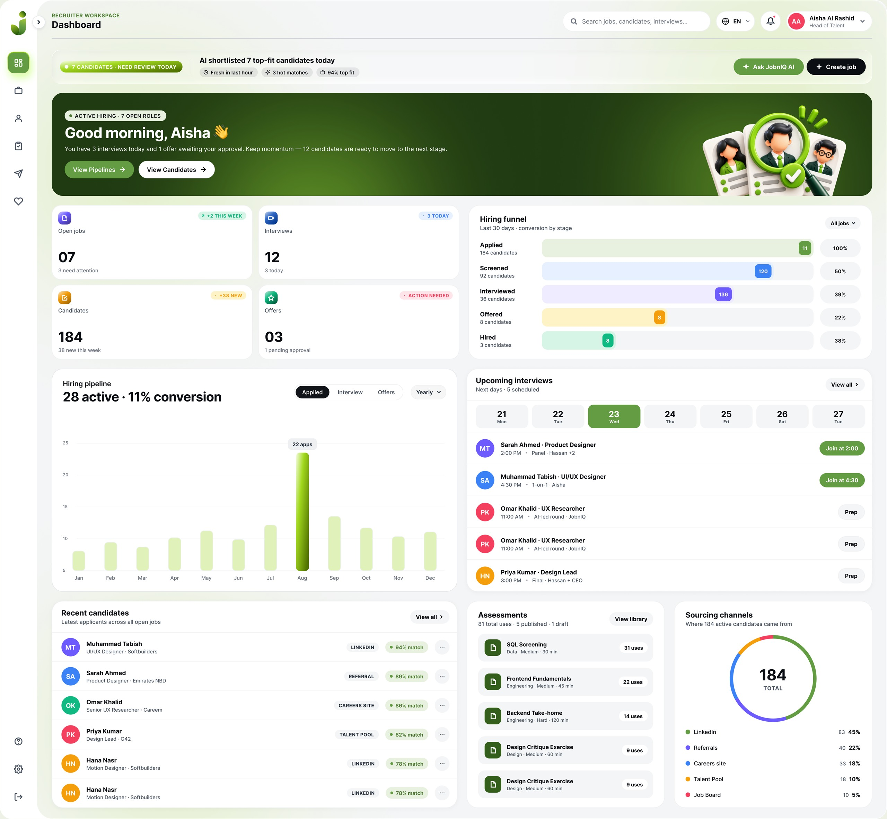
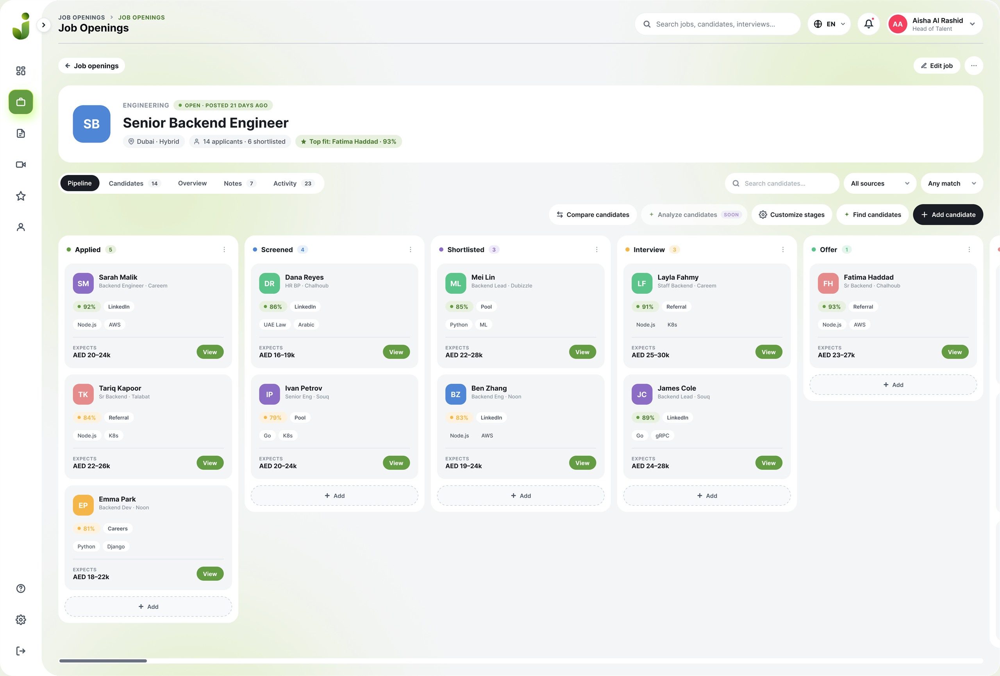
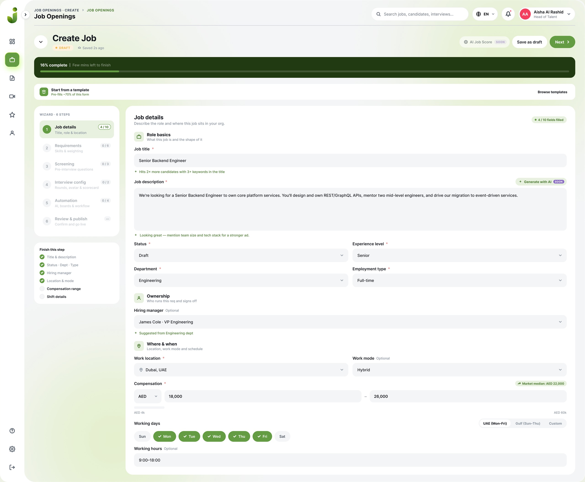
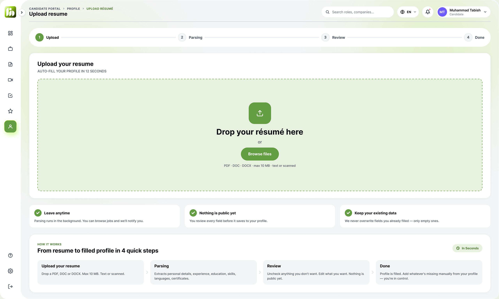
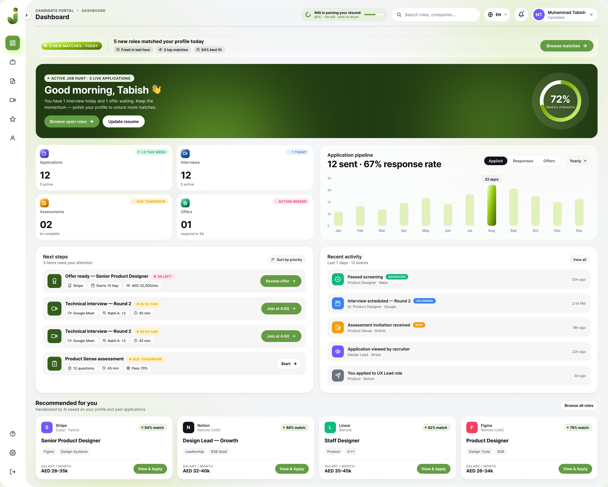
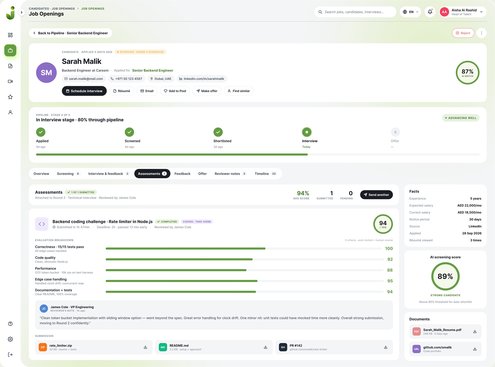
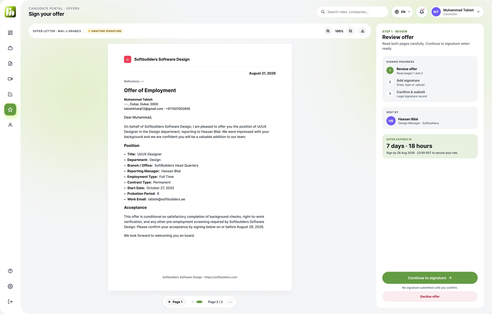
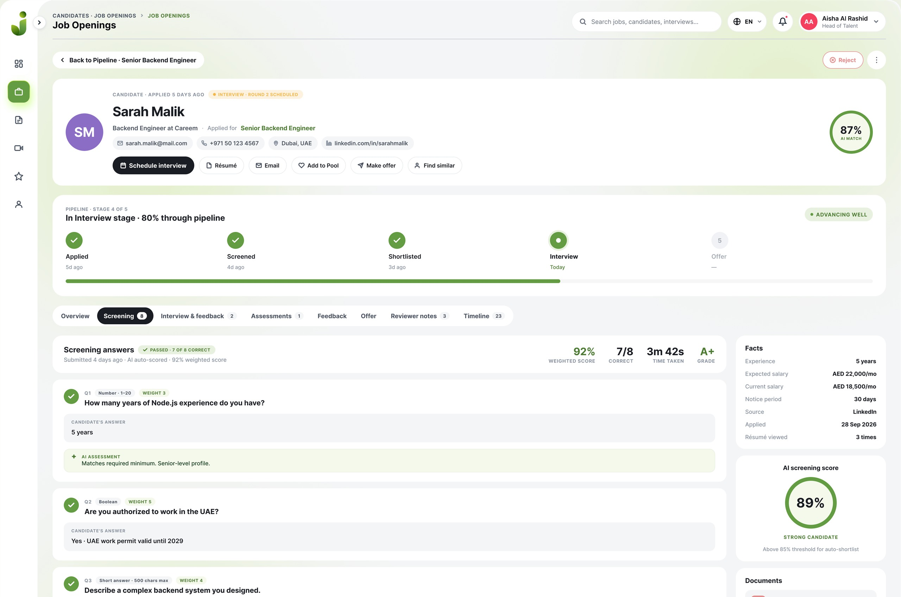
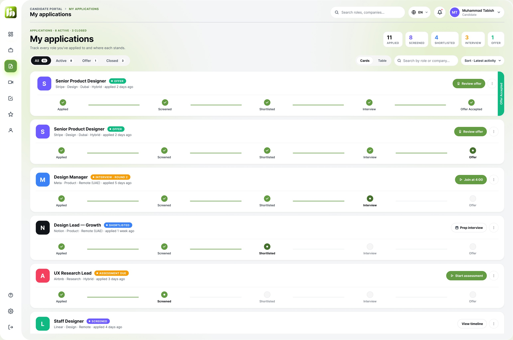
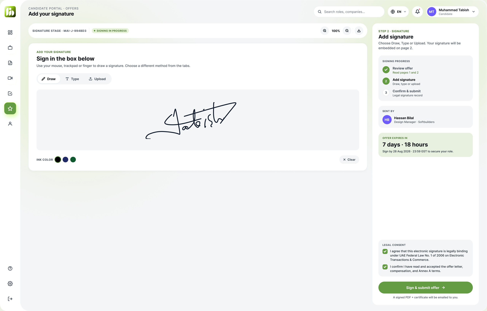

JobnIQ
Compressing hiring from weeks to days by taking the manual work out of job creation, candidate matching, screening and interview scheduling — so recruiters spend their time on judgement instead of admin.
- Role
- Product Designer — end to end
- Timeline
- 2025 — ongoing
- Team
- 1 designer, 4 engineers, 1 PM
- Scope
- Web app, design system

Recruiters did not need another dashboard. They needed the busywork between the decisions to disappear.
The shape of the problem
What research across 14 recruiters, 8 hiring managers and 5 competitor audits surfaced again and again.
The same recruiter workflow,
reimagined for 2026
Nothing was added for its own sake. Each step below is an existing habit, with the mechanical half handed to the system.
AI handles the mechanics.
Recruiters handle the meaning.
Every automated decision is visible, attributable and reversible — the system proposes, the recruiter decides.

AI job creation
Draft a role in minutes: description, required skills, interview structure and screening questions, all editable before anything goes live.
Smart matching
Candidates scored against the requirements that actually matter, with the reasoning shown next to the score so it can be challenged.
Five-stage pipeline
Applied, screened, shortlisted, interviewed, offer. One shared state, no parallel spreadsheets, no status column nobody trusts.
Olivia AI interviewer
Runs structured first-round screens, writes the summary and flags exactly what a human should look at next.
Decision trail
Every automated action is logged with its reasoning, so a rejected candidate can always be traced back to a decision someone can defend.
Five screens,
one continuous hire.





I stopped reading CVs at midnight. That is the whole review in one sentence.
From flows to a system that scales
Six months, six phases. Each one closed a question the one before it opened.
Discovery & interviews
Fourteen recruiters, eight hiring managers and an audit of five competing tools. The brief changed twice before a single screen was drawn.
Journey mapping
Both sides of the hire mapped end to end, which is where the real cost showed up: not in any one step, but in the handoffs between them.
Information architecture
One pipeline model every role could share, so a recruiter, a manager and a candidate would all read the same state the same way.
Low-fidelity flows
Fast greyscale passes over the riskiest flows — scoring, scheduling and pipeline state — tested before any visual design existed.
Design system
Tokens, components and patterns so four engineers could build without re-deciding the basics every sprint.
Build, beta & iterate
Paired with engineering through build, ran the closed beta, then fed every finding back into the system rather than patching screens.
Ten sections.
Zero bespoke screens.
Tokens first, components second, patterns third — written down once so four engineers could build without re-deciding the basics every sprint. Every screen in the product resolves back to this file.
JobnIQ — design system
Bound variables, light and dark. Every fill in the product binds to one of these tokens — never a raw hex.
What the system is for
Four product rules. Every token, component and pattern below exists to make one of them cheap to honour and expensive to break.
Colour
27 semantic tokens in five groups. Brand lime is spent sparingly — primary CTAs, active nav and progress only. Status colours are locked to meaning, so amber always reads pending and never reads brand.
Families
Inter is the sole UI family — Bold for headings and micro labels, Medium for body, Regular held back for legal copy. Script faces appear only inside signature rendering, never in UI.
Type scale
Eleven steps, each with one job. If a new screen needs a twelfth, the screen is wrong.
Space · shape · depth
The bones behind every screen. An 8-based spacing scale with no ad-hoc padding, nine radii and three shadow tiers — anything deeper than tier 3 means the pattern is wrong, not the shadow.
Buttons
Six variants, three sizes, five states plus loading. Every button is a pill, text is Bold and the icon gap is always 8. Primary lime appears once per view; destructive is limited to irreversible actions inside a confirmation.
Forms
44h pill inputs on canvas/bg with soft borders. Focus binds brand primary; error binds rose plus a micro label. Checkboxes are 20×20 at r6 and fill lime on select.
Navigation & data display
Status pills take an accent-soft fill with accent-dark text, so colour carries meaning before the label is read. Avatars run 28 / 36 / 44 / 56 / 72 and use violet for identity — never brand.
Feedback & overlays
Modals at r24 over ink/900 at 40%, right-slide drawers at 480w, toasts as r16 pills and four full-page states — empty, loading, error, success. Every state ships with its own primary action, so no screen dead-ends.
Page patterns
Six reusable compositions. Every new screen starts from one of these skeletons — content changes, shell dimensions do not.
What to reuse, what not to invent
Eleven shipped screens, each mapped back to a pattern and a component set. The guardrails exist because this is the list of ways a system quietly stops being one.
Hiring is a two-sided product.
So is JobnIQ.
The same pipeline, read from both ends. Recruiters see control and context; candidates see where they stand and what happens next.


Early beta signals
faster, fairer hiring.
Measured across the first cohort of beta teams. Directional rather than final — the sample is small and still growing.

What I’d do differently
Prototype the AI before the UI
I designed the scoring screens before I knew how the model would behave. Testing the output first would have saved a full redesign of the match panel.
Involve hiring managers earlier
They were brought in after the recruiter flows were settled, and their approval step had to be retrofitted into a pipeline that had not planned for it.
Design system first
Components were extracted after three screens were already built, which cost a reconciliation pass that a token set up front would have avoided.
Want the full walkthrough?
Happy to share the Figma files, the prototypes and the thinking behind each screen.